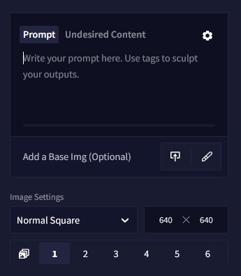

Image Generation Basics & Prompt Basics
Before you get started with Image generation, you will need a Subscription.
Basics
- Figure out your prompt
- Pick your favorites to Edit, Generate Varieties or Enhance.
- Adjust your text prompt, generation settings, or the image itself with our Edit Image canvas
- Adjust Strength & Noise when applicable / Steps & Prompt Guidance / refocus your text prompt
- Try different Image Resolution aspects
Already got the hang of things? Try more advanced image generation methods: Image2Image and Control Tools, use the Canvas or explore Prompt Mixing
How do I word my prompt?
Prose vs Tagging: You might try just using prose for your prompt, describing things in full sentences, but the most efficient way is a subject description accompanied by tags. The AI will suggest tags it's familiar with as you type. The bubble opacity next to each suggestion indicates the AI's familiarity with any given tag.

Token Limit: Watch your Context Limit bar! It displays how much space is left for your prompt! As always, keep in mind that the AI can only see a specific number of tokens, so overly redundant or drawn out, lengthily tagged descriptions might not be desirable.
小贴士： Note the bar at the bottom of your prompt text field! It will slowly fill up as you near the limit of your text prompt context size.
Order matters: Try switching up the order of your subject and tags! Results can vary greatly depending on where you locate information in the prompt. It is advised to keep the most important things in the front half of your prompt.
Emphasize it: Does the AI ignore the tags you give it? Surround tags with {} to strengthen or weaken with []. This can fix the issue of other information overpowering what you want the AI to really focus on!
小贴士： We highly recommend prompt experimentation. Generate normally or use a low step amount to see which words have the best effect for your purpose, or explore which tags you favor by combining different things.
What are all those Settings?
Steps
Steps define the number of iterations the AI should refine from the initial creation of your prompt. You can use a low amount to quickly generate and see the way your image is headed, or you can use more Steps to generate a full image. Too many Steps may also be counterproductive or no longer refine your generation. If you want to save Anlas you can keep Steps relatively low until you find a generation with a composition you like and use the Enhance button on it for further refinement.
小贴士： Opus subscribers can generate images with 28 or fewer Steps without spending Anlas if the size stays under the normal threshold and are generated one at a time.
Prompt Guidance
The Prompt Guidance value indicates how much the AI will respond to your prompt and how much freedom it has to interpret. A greater value can help the AI stick closer to the overall intent of your text prompt, but if set too high, it may have an adverse effect.
Sometimes the Prompt Guidance value will adjust how refined and strong the final generation will be: a lower Guidance number can be more painterly, dreamy, and softer, while a higher Guidance value provides more fine detail and sharpness.
小贴士： Changing the Prompt Guidance value can alter details in generated images. If you just generated an image and would like to change some small details about it, you can try locking the seed and increasing or decreasing the Guidance by small amounts and see if they change. Smaller decimal increments work if you type them!
What is a Seed?
The Seed specifies the exact way the AI calculates your individual image. Each random generation has a unique seed. You can copy the Seed to the Seed box by clicking the Seed number in the bottom right of a generated image. Seed numbers can also be found in the filename of downloaded generations and also their Exif data.
Plugging in a previously generated Seed can assist the AI to generate in the same direction.
小贴士： The Seed that shows in the bottom right is the seed used to generate whatever image is currently selected in the history. If you want to re-use a seed from an image generated earlier in the session, just select it in the history and copy its seed!
Enhance
Enhance passes generated images through the process a second time to improve upon them, based on the prompt.
The Magnitude slider is a combination of value combinations: Strength & Noise. You can use the Magnitude slider or select the Show Individual Settings option to set the values yourself:
High Strength allows the AI to change the image composition. Lower Strength will stick closer to the original generation.
Noise may allow the AI to generate more details but can cause strange artifacts if set too high.
I still don't know how to word my prompt! What can I do?
If the quality of your generation is lackluster, try adding masterpiece, best quality, high quality to your prompt, this will pull higher quality data and should instantly improve your results.
Subject
The focus of your prompt should be in the first half of your generation. For example, a sorcerer, a tiny kitten, clashing swords, a book, anything you can think of that should be the primary subject of your image. On the other hand, if you want a more esoteric kind of generation with surprising outcomes, input whatever comes to mind!
Style / Framing Method / Artist / Medium / Time or Era
Adding a style or framing can focus the AI's vision on your subject: close-up, portrait, landscape, wide angle, and so on. It also has the ability to influence the style of your image.
Example:
Adding portrait before your prompt can make the shot much more focused, and give a different composition and dynamic.
portrait of a ...
You can always try to define the object of your generation with 1x and preface your prompt.
1girl,
1boy,
1other,
Medium
The Medium tags can be used to denote a specific painting or drawing style to your image—and more! Using tags like watercolor (medium) , or copics (medium) causes the image to take on more of a watercolor painted or copic pen drawn effect accordingly.
Medium Tag Examples: 3d (medium), animated (medium), watercolor (medium), ink (medium), pen (medium), copics (medium), graphite (medium), watercolor pencil (medium), spot color (medium), etc.
小贴士： Mix it up! Combine different styles or use unusual media to get surprising results!
Framing
Framing tags can be used to adjust the perspective of subjects in your image. For example, using pov encourages the AI to compose the image as if it were through the eyes of another character, often adding first-person hands to the image. Using something like from below will cause the image to use a lower angle, looking up at a character.
Framing Tag Examples: atmospheric perspective, dutch angle, fisheye, panorama, vanishing point, perspective, pov, rotated, sideways, upside-down, from above, from behind, from below, full body, cowboy shot, upper body, etc.
Time or Era
If you provide the AI with a time, then it can implement elements of it into your image.
Era Examples: 1990s (style), 1980s (style), 1800s, renaissance, rococo, retro, etc.
You can always check the tag suggestions that pop up as well!
Object Focus
Specifying the type of focus you want for the AI can provide clearer image composition. For example, if you want the AI to focus on an object, use the tag “object focus”.
Object Focus Examples: animal focus, eye focus, cloud focus, vehicle focus, weapon focus, soft focus, etc.
小贴士： Don't be afraid to include a term just because it isn't recognized as a suggested tag. NovelAI Diffusion is trained on prose as well.